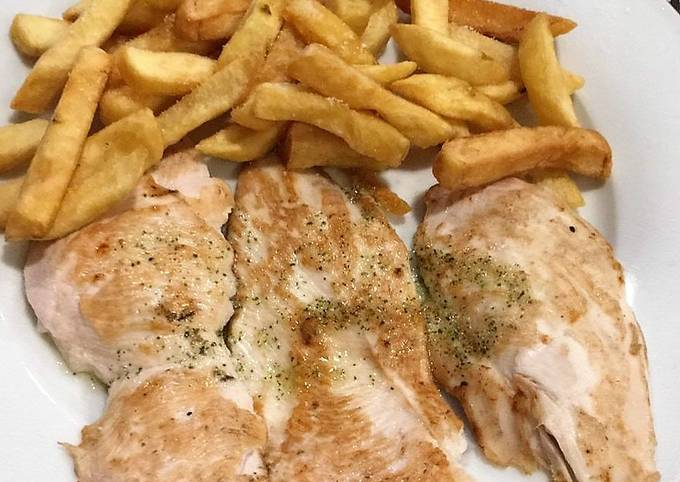
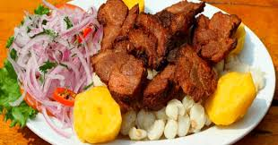

lomo saltado
El rocoto relleno es un plato emblemático de la gastronomía peruana, especialmente de la región de Arequipa. Se trata de un aperitivo delicioso y picante que combina ingredientes frescos y sabores intensos.
0

filete pollo c/n frejol
El filete con papas es un plato clásico que combina la suculencia de un buen corte de carne con la versatilidad de las papas. A continuación, te presento una breve descripción y una receta sencilla para prepararlo.
0

chicharron
El chicharrón es un plato popular en muchas culturas latinoamericanas, especialmente en Perú, México y Colombia. Consiste principalmente en carne de cerdo frita, que se caracteriza por su textura crujiente y su sabor delicioso.
0